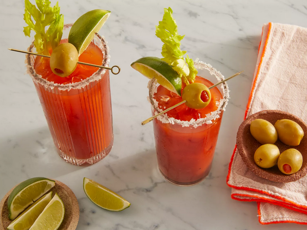

Bloody Mary

Classic Bloody Mary
A Bloody Mary is easy to make from scratch with vodka, tomato juice, and a few other simple ingredients. The spicy, salty, and savory taste of this classic cocktail makes it perfect for brunch or other afternoon gatherings.
If your brunch menu isn't complete without a Bloody Mary, then you're in luck because you've just found the best Bloody Mary recipe on the internet! Get ready to pile this spicy, savory cocktail high with your favorite toppings — but first, save this recipe to your collection because it's about to become your go-to.
Ingredients
- 1 teaspoon sea salt, or as needed.
- Ice cubes, as needed.
- ¾ cup spicy tomato-vegetable juice cocktail (such as V8®).
- 1 (1.5 fluid ounce) jigger vodka.
- 2 dashes Worcestershire sauce.
- 1 dash hot pepper sauce (such as Tabasco®).
- Salt and ground black pepper to taste.
- 1 stalk celery.
- 2 garlic-stuffed green olives, threaded onto a toothpick.
Steps
- Gather all ingredients.
- Pour salt onto a small plate. Moisten the rim of a glass and press into the salt. Fill the glass with ice cubes.
- Fill a cocktail shaker with ice cubes; add vegetable juice cocktail, vodka, Worcestershire sauce, hot pepper sauce, salt, and pepper. Cover and shake until the outside of shaker has frosted, about 20 seconds.
- Strain Bloody Mary into the prepared glass. Garnish with celery stalk and olives.
- Enjoy!